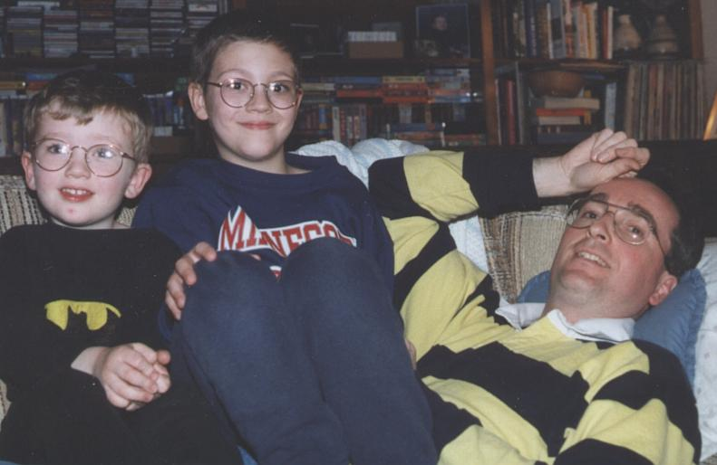

There has been some pressure on me to improve the performance of our web site. Some of the image files were quite large and the download times have been a test of patience for those brave enough to go exploring here. So as of 6/98 I pulled some of the resolution out of the larger files and I think made it all quite a bit snappier. Hope that this makes for better accessibility to those with older computers (especially Fritz).
(back)